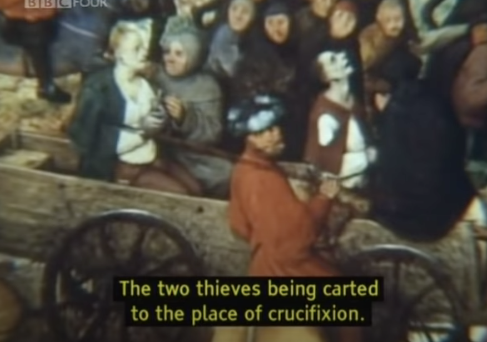
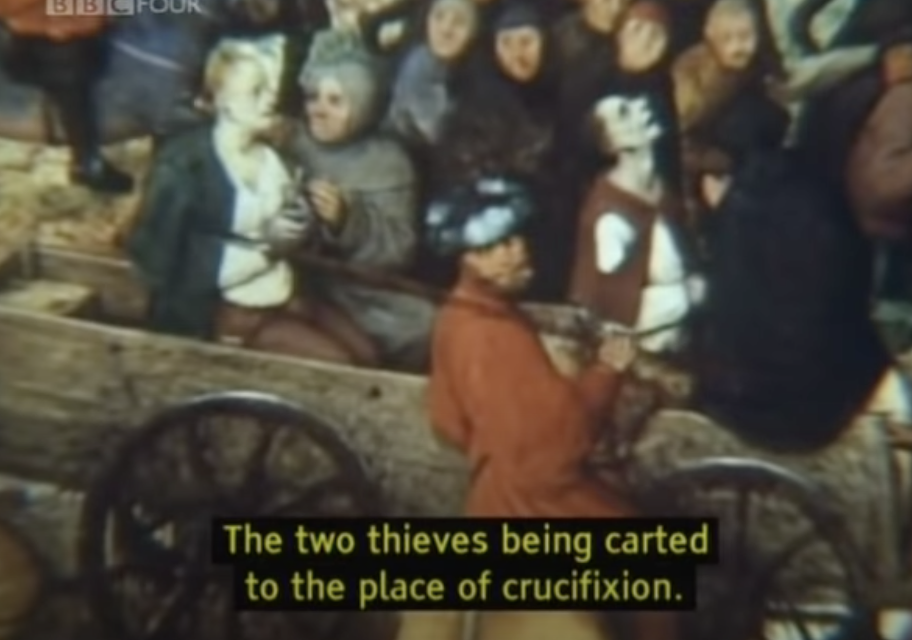
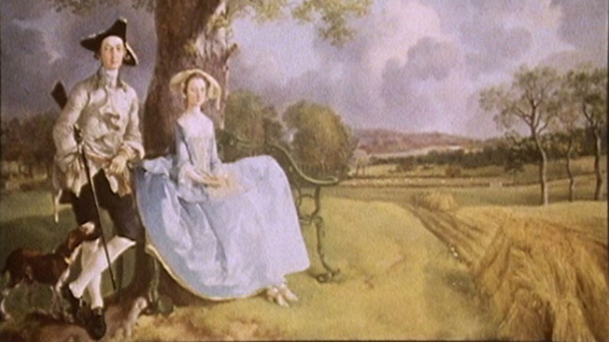

Ways of Seeing
by John Berger 

I have never thought that paintings can be used for manipulation. With the help of camera movements and sound, paintings can be converted to different interpretations. For example, from the left painting above, one might not interpret anything at first; however, when the camera is zoomed in on the right painting, it reveals different meanings.

Paintings were once used to demonstrate ones existence and power. Paintings focused on dressing and jewels on women as shown above. I find this very similar in mordern portrait photographs, where people usually take them to record their existence.